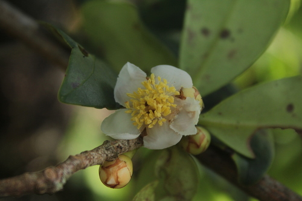

Pentaphylacaceae
(No common name widely used)
Pentaphylacaceae is a family of flowering plants in the order Ericales, comprising about 12 genera and approximately 340 species of evergreen shrubs and trees. The family has a broad pantropical distribution, extending into subtropical regions. Its current circumscription is much broader than historically, now including the large former family Ternstroemiaceae (e.g., Ternstroemia, Eurya, Adinandra) alongside the type genus Pentaphylax.
Overview
Pentaphylacaceae, as currently defined by the Angiosperm Phylogeny Group (APG) system, represents a significant lineage of woody plants within the diverse order Ericales. Historically, the family contained only the single genus Pentaphylax from Southeast Asia. However, molecular phylogenetic studies revealed a close relationship between Pentaphylax and the much larger family Ternstroemiaceae, which included well-known tropical and subtropical genera like Ternstroemia, Adinandra, Eurya, and Freziera. Consequently, Ternstroemiaceae was merged into Pentaphylacaceae, resulting in a much larger and more widely distributed family.
Members are typically evergreen trees or shrubs with simple, often leathery leaves arranged alternately. Flowers are usually actinomorphic, 5-merous, and possess a superior ovary and often numerous stamens. Fruits are commonly berries or capsules. Many species are known to accumulate aluminum in their tissues. While the family lacks major economic crops, some species are used for timber, traditional medicine, or occasionally cultivated as ornamentals.
Quick Facts
- Scientific Name: Pentaphylacaceae Engl.
- Common Name: None widely used
- Number of Genera: Approximately 12 (e.g., Pentaphylax, Ternstroemia, Adinandra, Eurya, Freziera, Cleyera, Visnea)
- Number of Species: Approximately 340
- Distribution: Pantropical, extending into subtropical regions of Asia, Africa, Australia, and the Americas.
- Evolutionary Group: Eudicots - Asterids - Ericales
Key Characteristics
Growth Form and Habit
Evergreen shrubs or small to large trees.
Leaves
Leaves are usually arranged alternately (spirally), less commonly opposite or appearing whorled. They are simple, often leathery (coriaceous) in texture. Margins are typically entire or toothed (serrate or crenate). Stipules are usually absent or minute and caducous. Aluminum accumulation is common.
Inflorescence
Flowers are often borne solitary in leaf axils or grouped in axillary clusters (fascicles), cymes, or racemes.
Flowers
Flowers are usually bisexual (sometimes unisexual, with plants then dioecious, e.g., in Eurya), actinomorphic (radially symmetrical), and typically 5-merous (sometimes 4- to 7-merous).
- Sepals: Usually 5 (range 4-7), distinct or slightly fused at the base, often unequal, and typically persistent in fruit.
- Petals: Usually 5 (range 4-7), distinct or slightly fused at the base (connate), often white, cream, yellowish, or pinkish.
- Androecium: Stamens are usually numerous (15-100+), arranged in several whorls, though sometimes fewer (e.g., 5 in Pentaphylax, 10). Filaments are distinct or slightly connate at the base, sometimes attached to the base of the petals (adnate). Anthers are typically basifixed or versatile, opening by longitudinal slits.
- Gynoecium: The ovary is superior (rarely half-inferior). It is composed of usually 3-5 (range 2 to many) fused carpels (syncarpous), forming an equal number of locules. Placentation is axile, with 1 to many ovules per locule. Styles are distinct or fused into a single column; stigmas are small, capitate or lobed.
Fruits and Seeds
The fruit is variable, most commonly an indehiscent fleshy or leathery berry, or sometimes a dry, dehiscent capsule (loculicidal or septicidal). Fruits contain one to many seeds. Seeds are sometimes winged or have a fleshy coat (sarcotesta). Endosperm is present, usually oily.
Chemical Characteristics
Plants often accumulate aluminum. Tannins, saponins, and terpenoids are commonly found. Glucosinolates (mustard oils) are absent (distinguishing them from Brassicales).
Field Identification
Identifying Pentaphylacaceae involves recognizing features common to the included genera, particularly within their pantropical range:
Primary Identification Features
- Habit: Evergreen shrubs or trees.
- Leaves: Usually alternate, simple, often leathery, margins entire or serrate/crenate. Stipules absent.
- Flowers: Actinomorphic, typically 5-merous (5 sepals, 5 petals).
- Stamens: Usually numerous (can be fewer), distinct or basally connate.
- Ovary: Superior, typically 3-5 fused carpels/locules, axile placentation.
- Fruit: Usually a berry or sometimes a capsule.
Secondary Identification Features
- Sepals: Often persistent in fruit.
- Dioecy: Some genera like Eurya have separate male and female plants.
- Aluminum Accumulation: While not visible, it's a common physiological trait.
- Habitat: Tropical and subtropical forests, often in montane regions.
Seasonal Identification Tips
- Year-round: Evergreen habit and alternate, simple, leathery leaves are constant features.
- Flowering/Fruiting Period: Necessary for definitive identification, especially distinguishing from similar families. Timing varies greatly across pantropical range.
Common Confusion Points
- Theaceae (Tea Family): Closely related (also in Ericales), very similar in habit, leaves (alternate, simple, leathery, often serrate), and flowers (5-merous, numerous stamens, superior ovary). Distinctions can be subtle; Theaceae often have spirally arranged floral parts (vs. whorled in Pentaphylacaceae), anthers often versatile (vs. often basifixed), and fruit consistently a capsule. Embryo shape also differs.
- Ericaceae (Heath Family): While also in Ericales, most Ericaceae differ significantly (often urn-shaped fused corollas, specific stamen features like pores/awns, often capsular or berry fruits but with different ovary structure). Some woody tropical Ericaceae might appear similar vegetatively.
- Clusiaceae (Guttiferae): Often have opposite leaves (vs. usually alternate), frequently produce latex/resin, and have different floral structures (e.g., stamen bundles).
- Aquifoliaceae (Holly Family): Alternate simple leaves, berry fruits, but flowers are typically small, 4-merous, with few stamens alternating with petals.
- Other tropical tree/shrub families: Requires careful examination of flower formula, stamen number/arrangement, ovary structure (carpel/locule number, placentation), and fruit type.
Field Guide Quick Reference (Pantropical)
Look For:
- Evergreen shrub or tree
- Leaves: Usually alternate, simple, leathery
- Flowers: Actinomorphic, 5-merous
- Stamens: Usually numerous
- Ovary: Superior, 3-5 locules
- Fruit: Usually berry, sometimes capsule
Key Distinctions:
- Very similar to Theaceae (subtle floral/embryo differences)
- Alternate leaves (vs. opposite in many Clusiaceae)
- Numerous stamens (vs. few in Aquifoliaceae)
- Superior ovary (vs. inferior in many related Ericales like some Ericaceae)
- Includes former Ternstroemiaceae
Notable Examples
Examples representing the diversity within the expanded Pentaphylacaceae:

Pentaphylax euryoides
(Pentaphylax)
The original sole member of the family, a shrub or small tree found from southern China to Sumatra. It has alternate, simple leaves and relatively small flowers with 5 sepals, 5 petals, only 5 stamens alternating with the petals, and a 5-locular superior ovary developing into a capsule.

Ternstroemia gymnanthera
(Japanese Cleyera)
A large genus (part of former Ternstroemiaceae) of shrubs and trees found in Asia and the Americas. T. gymnanthera is widely cultivated as an ornamental evergreen shrub. It has glossy, leathery leaves, small fragrant creamy-white flowers with 5 petals and numerous stamens, and small berry-like fruits.

Eurya japonica
(Japanese Eurya / Sakaki)
A large genus (~130 species, former Ternstroemiaceae) of evergreen shrubs and trees from Asia and the Pacific. Plants are typically dioecious (separate male/female). Flowers are small, often bell-shaped, usually with 5 petals and numerous (male) or few/absent (female) stamens. Fruit is a small berry. E. japonica is culturally important in Japan (used in Shinto rituals).

Adinandra spp.
(e.g., A. dumosa - Tiup Tiup)
A genus (former Ternstroemiaceae) of trees and shrubs found in tropical and subtropical Asia. They typically have serrated leaves, relatively large flowers (compared to Eurya) with 5 petals, numerous stamens often fused at the base or to the petals, and fruit usually a berry. A. dumosa is common in Southeast Asia.
Phylogeny and Classification
Pentaphylacaceae belongs to the large and diverse order Ericales, which is positioned within the asterid clade of eudicots. This order includes families adapted to various conditions, often associated with nutrient-poor soils, and includes familiar groups like Ericaceae (heaths, blueberries), Primulaceae (primroses), Sapotaceae (sapodilla), and Theaceae (tea, camellias).
Molecular studies led to the significant re-circumscription of Pentaphylacaceae to include the former family Ternstroemiaceae and the genus Pentaphylax. This combined group forms a well-supported clade within Ericales. Its relationships to other families in the order place it within the core Ericales, often showing affinities with Sapotaceae, Ebenaceae (ebony family), and the Lecythidaceae (Brazil nut family) clade, although its exact sister group relationship can vary slightly between studies. It is clearly distinct from Theaceae, despite morphological similarities.
Position in Plant Phylogeny (APG IV)
- Kingdom: Plantae
- Clade: Angiosperms (Flowering plants)
- Clade: Eudicots
- Clade: Asterids
- Order: Ericales
- Family: Pentaphylacaceae (incl. Ternstroemiaceae)
Evolutionary Significance
Pentaphylacaceae is significant for:
- Phylogenetic Reclassification: The merger of Ternstroemiaceae into Pentaphylacaceae is a prime example of how molecular data reshapes traditional family boundaries based on morphology, revealing deeper evolutionary connections.
- Ericales Diversity: Represents a substantial pantropical lineage of woody plants within the Ericales, contributing significantly to the order's diversity, particularly in tropical forests.
- Biogeography: Its pantropical distribution provides material for studying the historical assembly of tropical floras across different continents.
- Morphological Convergence: Its similarity to Theaceae highlights potential convergent evolution in vegetative and floral traits among woody lineages in Ericales.
- Aluminum Accumulation: The tendency to accumulate aluminum is a physiological trait shared with some other families in Ericales and may be linked to adaptation to certain soil types.